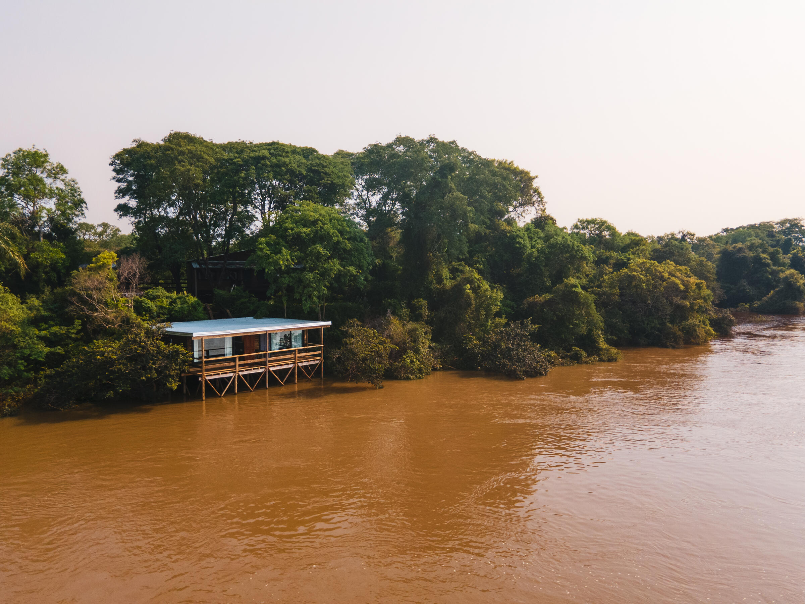

Arquitectura en armonía con el clima y la naturaleza.
Entre lo salvaje y las personas.
es un estudio de arquitectura, diseño, consultoría e investigación con origen en Buenos Aires. Comprometido con contribuir a un futuro bajo en carbono, permite a las personas experimentar la naturaleza en su máxima expresión. Mediante el análisis de datos climáticos, los proyectos se adaptan a las condiciones específicas de cada lugar, asegurando una baja demanda energética y una alta calidad ambiental tanto en espacios interiores como exteriores. Los elementos de la naturaleza configuran el lenguaje arquitectónico y dan forma a espacios que establecen un diálogo duradero entre las personas y el mundo natural.

View projects